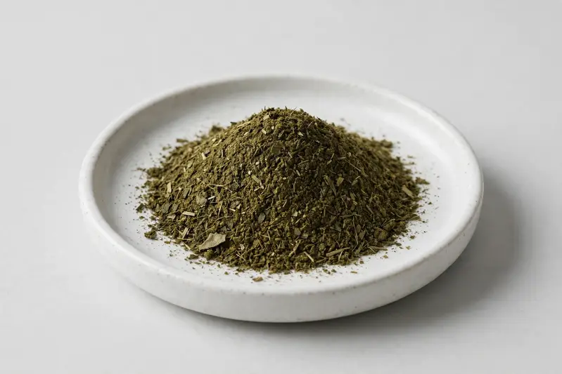

Raspberry leaf — a traditional botanical positioned around tea blends and women's-wellness formulations.

Overview
Raspberry leaf extract is a straight botanical powder derived from Rubus idaeus leaf, standardized around its natural tannin and ellagitannin content. Demand has grown steadily alongside interest in traditional-women's-wellness and herbal tea blends. As a Xi'an-based trading company, we source raspberry leaf extract through partner producers and confirm feasibility, grades and documentation only after reviewing your target spec.
Specifications below reflect commonly requested options in the market — not a stock list. Share your target spec and we'll confirm exactly what we can supply, honestly.
| Specification | Details |
|---|---|
| Botanical identity | Raspberry leaf extract powder (Rubus idaeus) |
| Marker compound | Commonly requested spec grades: tannin content 5%-20% (UV); ellagitannin-oriented grades on request; actual specs confirmed on inquiry. |
| Appearance | Dark green to olive-brown or greenish-brown fine powder |
| Analytical methods | Methods referenced in buyer specifications: HPLC, UV |
| Mesh size | Typically 80–100 mesh (confirm per inquiry) |
| Testing | COA/TDS arranged on request; scope agreed per your spec |
Applications
Documentation
We don't claim in-house labs or certifications we don't hold. COA and TDS documents can be arranged on request, and testing scope is agreed against your specification before supply.
FAQ
Related products
Theobroma cacao
Key marker: Theobromine 10-20%
View specs →Codonopsis pilosula
Key marker: 10:1 or polysaccharides
View specs →Rehmannia glutinosa
Key marker: 10:1 or catalpol
View specs →Ulmus rubra
Key marker: Mucilage Content
View specs →Althaea officinalis
Key marker: Mucilage Content
View specs →Buyer guides
Buyer’s guide
Identity, actives, heavy metals, micro — what each section of a Certificate of Analysis means, and the red flags that tell you to walk away.
Read the guide →Buyer’s guide
Section-by-section COA walkthrough — marker assays, heavy metals, micro panels, red flags, and a buyer checklist.
Read the guide →Send your target spec and volumes — we'll respond with a tailored quotation.
Request a Quote